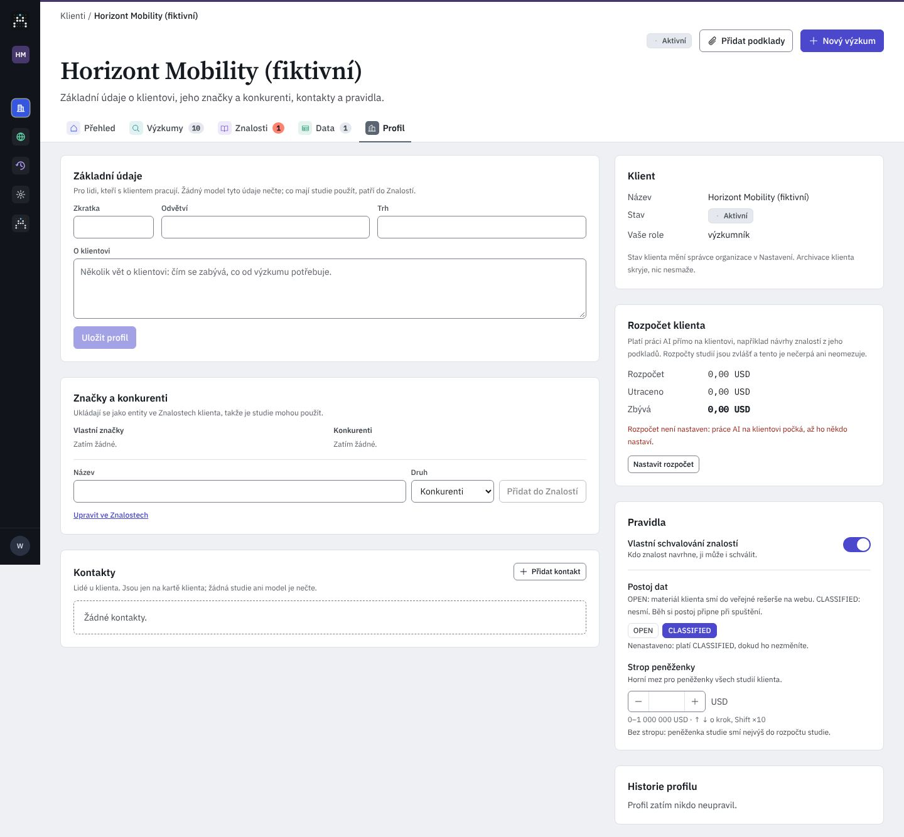

Pivovar Zlatá Hora (fiktivní)
AktivníRodinný pivovar z Vysočiny: tři ležáky a nealko. Výzkum potřebuje k rozhodování o ceně a komunikaci.O klientovi
Kdo klient je, s kým u něj mluvíte a podle jakých pravidel s jeho materiálem a penězi AIA pracuje.
Rodinný pivovar z Vysočiny: tři ležáky a nealko. Výzkum potřebuje k rozhodování o ceně a komunikaci.O klientovi
Kdo klient je, s kým u něj mluvíte a podle jakých pravidel s jeho materiálem a penězi AIA pracuje.
Pro lidi, kteří s klientem pracují. Žádný model je nečte; co mají studie použít, patří do Znalostí. Kliknutím upravíte; ukládá se samo.
Přidáním vznikne znalost druhu Subjekt; když vlastní schvalování neplatí, čeká na schválení někým jiným. Odebrat ji jde až s vyřazením znalosti no backend
Lidé u klienta. Jsou jen na kartě klienta; žádná studie ani model je nečte. V historii se ukáže jméno, nikdy e-mail.
Žádné kontakty.
Platí práci AI přímo na klientovi, např. návrhy znalostí z jeho dokumentů. Rozpočty studií jsou zvlášť.
Mění, kdo smí spravovat rozpočet klienta.
Pravidla mění vlastník nebo správce organizace; ostatní je vidí jen ke čtení. Naposledy změnil Tomáš Dvořák, 21. 10. 2026 jméno
Stav klienta mění správce organizace v Nastavení → Přístup a schvalování. Archivace klienta skryje, nic nesmaže.
Změny rozpočtu a pravidel historie dnes neukáže no backend
Údaje, značky, kontakty, rozpočet klienta a pravidla. Dnes čtyři různé ovládací prvky pro podobné věci, kódy OPEN/CLASSIFIED, rozpočet „0,00 USD“ tam, kde není nastaven, a kontakt zmizí bez možnosti vrátit. Kód develop @ a1a9a45c; C/ = …/components/aia/clients/, W/ = apps/api/…/routers/workspace.py.

Deep Research smí potom posílat dotazy odvozené z materiálu klienta do veřejného vyhledávání na webu. Platí pro běhy spuštěné od teď; běžící si drží pravidlo, které si připnuly.